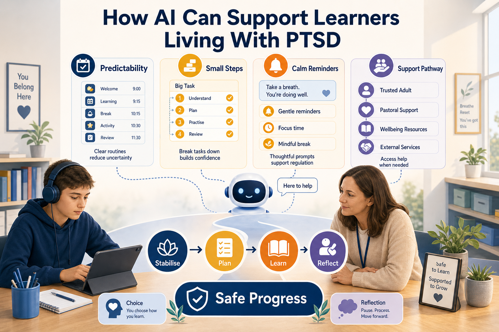

AI will not treat PTSD, but it can help create more predictable, flexible and supportive learning experiences when used with care.

For learners living with PTSD, learning can be affected by far more than the difficulty of the subject.
Attention, memory, sleep, emotional regulation, trust, confidence and feelings of safety can all shape whether a learner is able to participate.
AI will not treat PTSD. It should never replace clinical support, safeguarding procedures or human relationships.
But used carefully, AI can help create more predictable, flexible and supportive learning experiences.
This matters because trauma can become a hidden barrier to learning. A learner may want to engage but find concentration difficult. They may understand the topic but feel overwhelmed by deadlines. They may avoid certain activities because the environment feels unpredictable or unsafe.
According to the NHS, PTSD can involve symptoms such as re-experiencing traumatic events, avoidance, feeling on edge, sleep problems and difficulty concentrating. In education, those experiences can affect attendance, participation, assessment confidence and communication.
Educators are not expected to diagnose PTSD. However, they can design learning in ways that reduce avoidable stress and support safer participation.
AI can be useful when it helps staff and learners create structure, clarity, choice and manageable next steps.
AI should support learning tasks and routines. It should not diagnose PTSD, replace therapy or make safeguarding decisions.
The core reality is that many learners living with PTSD need learning to feel more predictable and controllable.
Sudden changes, unclear expectations, public pressure, crowded environments, complex instructions and high-stakes assessment moments can all increase anxiety for some learners.
AI can support by turning a large task into smaller steps, creating plain-language explanations, drafting revision plans, generating gentle reminders, summarising non-confidential learning materials and helping learners rehearse questions before a session.
This does not remove the need for professional support. It gives educators and learners additional tools to make learning more manageable.
The main challenge is using AI as support without making it unsafe, impersonal or over-powering.
A learner living with PTSD may need control, privacy and trust. If AI is used carelessly, it can feel intrusive. If personal trauma details are entered into unapproved tools, it can create serious privacy and safeguarding concerns.
The challenge is to use AI for learning support, not emotional diagnosis. AI can help organise a study plan. It should not be asked to assess a learner's mental health risk or replace professional support.
The safest approach is clear boundaries: AI supports learning tasks, while staff follow safeguarding, wellbeing and referral procedures where concerns arise.
This issue often happens because education systems are busy, standardised and assessment-driven.
Staff may not have enough time to personalise instructions, break down tasks or create multiple routes through the same content. Learners may not always feel able to explain what they need, especially if they worry about being judged.
AI can reduce some preparation barriers, but only when staff know how to use it responsibly. Without training, AI use may become inconsistent, unsafe or too generic.
Trauma-informed AI use requires both digital literacy and human sensitivity.
These examples show practical ways AI can support learning while keeping human oversight and privacy at the centre.
A learner is overwhelmed by a long assignment brief. AI helps turn the brief into a staged checklist: read the task, identify key criteria, gather notes, draft one section, review with support and submit.
A learner struggles to attend after poor sleep. AI helps create a flexible catch-up summary from approved class notes, which the tutor checks before sharing.
A learner avoids asking questions in class. They use AI to rehearse questions privately, then choose one question to ask the teacher or support worker.
A teacher uses AI to create three versions of the same explanation: a short overview, a step-by-step guide and a worked example. The teacher checks all versions for accuracy and tone.
A support team helps a learner create a weekly routine with reminders, planned breaks and review points, while making sure the learner remains in control of the plan.
If organisations ignore this issue, learners living with PTSD may continue to be misunderstood as unreliable, disengaged or difficult.
They may miss learning opportunities, avoid assessment, withdraw from support or lose confidence in education altogether.
There is also an organisational risk. Without clear trauma-informed practice, staff may respond inconsistently. One member of staff may offer support, while another may apply pressure in a way that increases distress.
Doing nothing can make learning environments less inclusive and less effective.
A better way forward is to use AI within a trauma-informed learning support framework.
First, organisations should set boundaries. AI should not be used for diagnosis, therapy or safeguarding decisions. It can be used to support learning structure, accessibility, planning, revision, reminders and reflection.
Second, staff should be trained to use AI safely. This includes not entering sensitive personal information, checking outputs, using respectful language and keeping human oversight.
Third, learners should be given choice. AI-supported plans should be created with the learner where possible, not imposed on them.
Finally, support should be reviewed. If a tool, routine or reminder increases stress, it should be changed.
The leadership question is not simply whether AI can support learners living with PTSD.
The deeper question is whether organisations are prepared to use AI with enough care, governance and human judgement.
AI can help create predictability, clarity and flexible learning routes. But it must sit inside a culture that values safety, dignity, privacy and professional boundaries.
AI can support learners living with PTSD by helping create predictable routines, smaller learning steps, accessible explanations, gentle reminders and structured support pathways.
It cannot diagnose, treat or replace human care.
The strongest approach combines trauma-informed practice, staff training, learner choice, safeguarding awareness and responsible AI use.
How can we use AI to make learning feel safer and more manageable without losing the human relationships that learners need?
This article uses recognised health, education and AI guidance sources while keeping the advice educational rather than clinical.